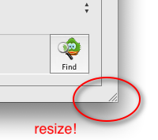

About AdiumBook
AdiumBook is an application useful to keep updated the information of your Adium and Address Book contacts.
You have some friends on your Address Book, right? But all of them are already added to your Adium contact list? AdiumBook can help you to find out.
You have lots of friends on your Adium contact list, some with nice pictures. Wouldn't it be nice to add them to your Address Book with a single button click? AdiumBook can make it for you.
Which of your Address Book cards don't have any IM field filled? And which don't have a picture? And which do use Jabber? AdiumBook comes to the rescue once again!
First steps
If you're new to AdiumBook, follow these steps:
- Run AdiumBook — Easy, uh?
- Choose the Reports > Adium contacts not in AB menu item (or just press Command-8) AdiumBook will scan all your contacts and will try to find all your Adium contacts that still don't have a card on your Address Book.
- Choose some contact on the Adium list (left side). Her/his name and IM login will appear on the details pane below. A picture will also appear if she/he defined one. Maybe you have this person on your Address Book, maybe don't. The report searches only by the IM field in Address Book, ignoring names, nicknames and e-mail addresses. But there is a button that makes a more detailed search.
- Press the Find button.

 If you already have this person on your Address Book, she/he will appear on the listings at the right side. Just click on the name and the details will appear below. Now check the IM fields on the Address Book side. If they don't match with the current Adium contact, you can use the Set IM button to fix it. It's important to set the IM field of all your contacts, so Adium can recognize this person.
If you already have this person on your Address Book, she/he will appear on the listings at the right side. Just click on the name and the details will appear below. Now check the IM fields on the Address Book side. If they don't match with the current Adium contact, you can use the Set IM button to fix it. It's important to set the IM field of all your contacts, so Adium can recognize this person.
 If the Address Book contact (right) doesn't have a picture, but the Adium contact (left) have, you can copy this picture pressing the Set Pic button. It will appear instantly on the right side.
If the Address Book contact (right) doesn't have a picture, but the Adium contact (left) have, you can copy this picture pressing the Set Pic button. It will appear instantly on the right side.
 If you don't have this person on your Address Book, you can add she/he by pressing the Add button. Simple as that. The name, IM login and picture will be filled in the card. Now you can press the Card button
If you don't have this person on your Address Book, you can add she/he by pressing the Add button. Simple as that. The name, IM login and picture will be filled in the card. Now you can press the Card button  to edit this new card in Address Book.
to edit this new card in Address Book.
- Repeat steps 3 and 4 for every contact and you'll end with a very complete and consistent Address Book data.
Run AdiumBook from time to time to keep your contacts updated!
News for this version
- The main window is now resizable - Finally! 
- Full text search for the "Find in Adium" and "Find in AB" buttons.
- Improved "AB contacts not in Adium" report, now finding AIM contacts with spaces on the screen name.
- Added a progress bar for the "Adium contacts not in AB" and "AB contacts not in Adium" reports.
- New menu item AdiumBook > Report an issue.
- Clicking news:
- Clicking the contact picture now reveals its file in Finder.
- Clicking the Address Book icon brings the Address Book application to the front.
- Clicking the sleepy Adium icon checks if Adium is online.
- Clicking the awake Adium icon makes a... discover for yourself! :)
- Note: Besides the new full text search on the Find buttons, the reports still search only by service. This is desired, because you still need to fill the correct IM field in Address Book for those contacts.
And some other minor changes, registered on the complete Version History.
Enjoyed the new features? Want to see more on the next release? So please support the AdiumBook project, clicking on the ♡ Donate menu item.
Tips & Tricks
- If you want to list all your contacts, just make an empty search: delete the search text or press the X button.
- The text search is case insensitive, so don't mind about capitalization.
- The search results are sorted by name. You can click on the table headings to change the sort column. A second click makes a reverse sort.
- You can drag the table headings inner border to resize the columns width. See picture.
- In Address Book view, to copy the selected IM login to the clipboard, right click it. Yes, right click the Pop-up button.
- Adium must be Online. If don't, the search results will be very poor and incomplete.
- When you launch this application, both Adium and Address Book are also launched (if they aren't already running). AdiumBook needs them.
- To fully integrate the applications, set up Adium to get the
contact's information from Address Book (picture and name).
Open Preferences > Advanced > Address Book and check the following:
- Import my contacts' names from the Address Book
- Use Address Book images as contacts' icons
- Combine contacts listed on a single card (or Consolidate contacts listed in the card for older versions)
Buttons
- Try to find in Address Book the selected Adium contact.
- The information for the currently selected contact (IM login and full name) is searched on the Address Book cards. AdiumBook tries to find them on the following fields: full name, nickname, e-mail addresses and IM information (AIM, ICQ, MSN, Yahoo and Jabber). The found contacts will appear on the Address Book side (right).
 Try to find in Adium the selected Address Book contact.
Try to find in Adium the selected Address Book contact.- Similar to the previous button, this one make the opposite: it gathers all the information for the current Address Book contact (full name, nickname, e-mail addresses, AIM/ICQ/MSN/Yahoo/Jabber names) and tries to find it on the Adium contact list (full name and IM login). The found contacts will appear on the Adium side (left). Note: Multiple entries for the same person can appear, but each for a different IM service, and possibly with a different picture.
- Show the contact's card in Address Book.
- This button brings the Address Book application to the front, showing the card of the selected contact. Then you can make quick updates on it. Useful after adding an Adium contact to Address Book (See next button). Note: In Address Book, the "All" group must be selected and its search field must be empty.
- Add the Adium contact to Address Book.
- This button creates a new card in Address Book, using the information of the selected Adium contact: name, IM login and picture. Before adding a new card, you can search for the contact in Address Book using the "Find in Address Book" button.
- Copy the contact's IM login from Adium to Address Book.
- This button sets the IM field of the selected Address Book contact using the IM login (number, e-mail or username) of the selected Adium contact. Useful to consolidate the contacts, so Adium can use their card's information. You can find people with missing IM information in Address Book using the "AB contacts with no IM" report (see Reports). Note: This button really sets the Address Book card IM field. It doesn't overwrite the previous contents (if any), but creates a new field. (In AdiumBook version 1.2 and older, it was an overwrite operation.)
- Copy the contact's picture from Adium to Address Book.
- This button sets the picture of the selected Address Book contact using the picture of the selected Adium contact. In simple words, copy the picture on the left to the right. You can find people with missing picture in Address Book using the "AB contacts with no picture" report (see Reports). Note: This button really sets the contact's picture in Address Book. It overwrites the previous picture (if any) and this operation cannot be undone.
Reports
- AB contacts with AIM/.Mac
- AB contacts with ICQ
- AB contacts with MSN
- AB contacts with Yahoo!
- AB contacts with Jabber Lists all Address Book contacts who have the specific IM field filled. A quick way to find the preferred IM service of your friends.
- AB contacts with no IM Lists all Address Book contacts who have no IM field filled. They are smart people who have a real life and don't spend time chatting on the computer. Or maybe you just forgot to fill their info ;)
- AB contacts with no picture Lists all Address Book contacts who have no picture set. They are just letters and numbers on your computer. What about to give them a face? Use the "Find in Adium" button to try to find them in Adium, so you can use their IM picture (icon, avatar, ...) on the Address Book card.
- Adium contacts not in AB Find your Adium-only contacts. With this report you can find people who you use to chat but don't have a card on your Address Book. Maybe you are forgetting somebody special? Or maybe you already have added some of them but just forgot to fill the IM field on Address Book.
- AB contacts not in Adium Find your Address Book-only contacts. With this report you can find people who have one or more IM informed on the Address Book card, but you haven't them in your Adium contact list. You know the girl, maybe she's online, but you can't talk to her because she's not on your list. AdiumBook helps you to get social!
- Your statistics (Command-S)
A nice report with your usage statistics. It shows how many
searches, reports and actions you have made so far. Based on that
numbers, it shows the estimated total time AdiumBook saved you from
doing manual and boring tasks on both Adium and Address Book.
Contact
- Contact the author in verde@aurelio.net.
- Visit the AdiumBook website and leave a comment.
- Found a problem? Check the troubleshooting section on the website. If your problem isn't there, or if you have a suggestion for future releases, please use the AdiumBook > Report an issue menu item.
- Enjoy!